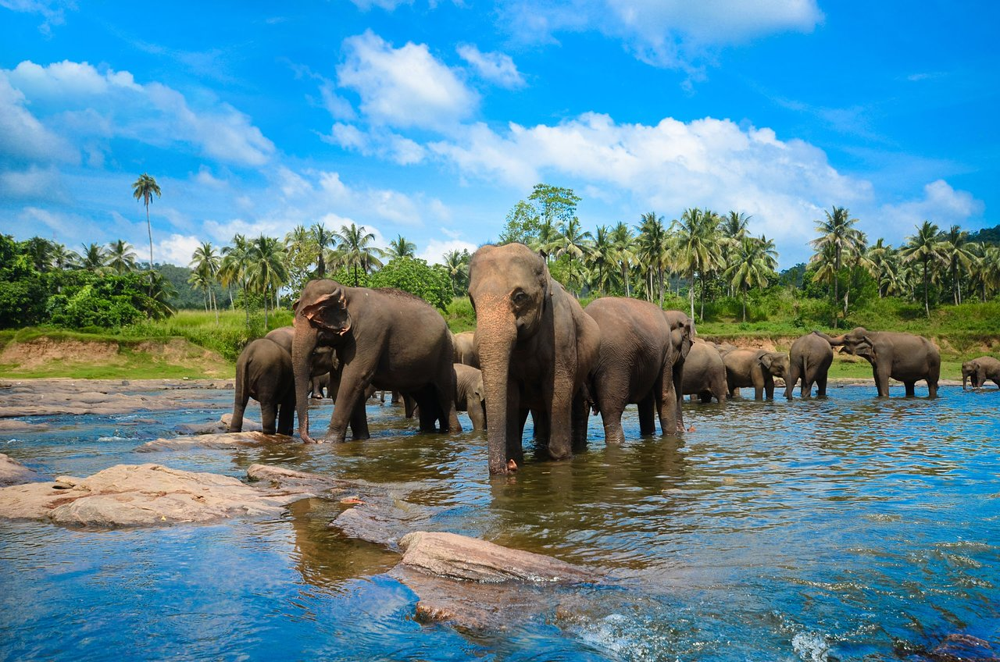
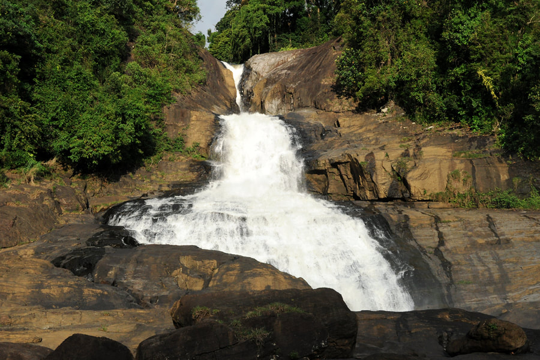
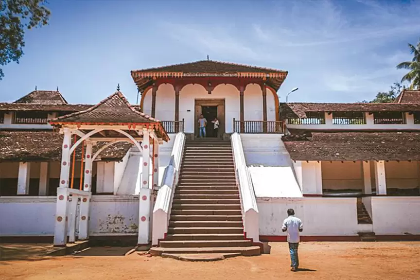
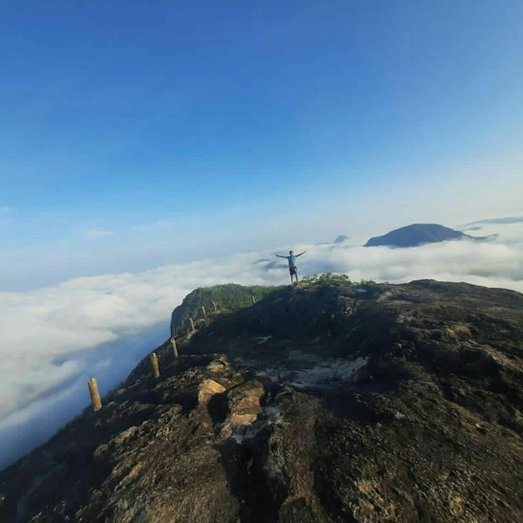

Welcome To The
" SABARAGAMUVA ..."
The Sabaragamuwa Province (Sinhala: සබරගමුව පළාත ) is one of the nine provinces of Sri Lanka, the first level administrative division of the country. The provinces have existed since the 19th century but did not have any legal status until 1987 when the 13th Amendment to the Constitution of Sri Lanka established provincial councils.[2][3] The Sabaragamuwa Province contains two districts: Ratnapura and Kegalle. It is named after its former indigenous inhabitants, namely the Sabara, an indic term for hunter-gatherer tribes, a term seldom used in ancient Sri Lanka. Sabaragamuwa University is in Belihuloya.
Places to visit in Sabaragamuva Province




